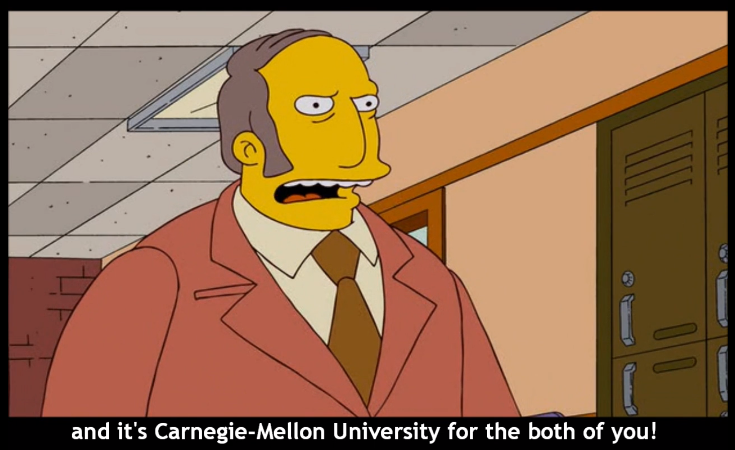
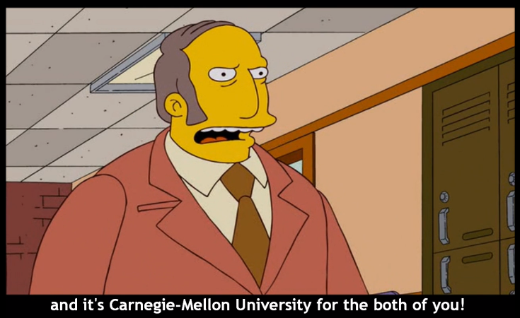

and 35mm
and 35mm enthusiast. She can be found designing WIRED
enthusiast. She can be found designing WIRED magazine on the internet at Condé Nast
magazine on the internet at Condé Nast , catching up on Time To Say Goodbye
, catching up on Time To Say Goodbye , and always in search for a good croissant.
, and always in search for a good croissant.
In recent history, she designed interfaces for creative tools at Apple , and received a B.H.A. in Design
, and received a B.H.A. in Design and Psychology from Carnegie Mellon University.
and Psychology from Carnegie Mellon University.
Thank you for visiting ✌︎(◡ ‿ ◡ ✌︎)